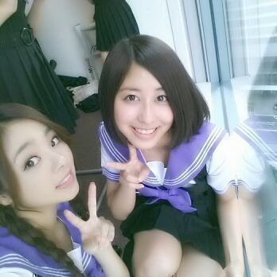
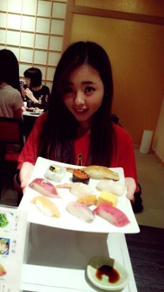

| 2013/09 09 Mon | 低血圧って言われた(´； ω；｀) 嘘でしょ？ そん なはずはないよ。 ろってぃん |
こんちゃんわ〜ん(*´ω｀*)
Rottyだお。

昨日はねっ朝早くから
生写真の撮影やったよ(*^^*)
色んなお洋服着て撮ったから
お楽しみにねん\(*^^*)/
それと昨日は
高校の卒業アルバムの写真を
撮った記念すべき日でもある！
終わってからは
久しぶりに渋谷へ行けました〜(о´∀`о)
今年の夏は 仕事が増え収録やったり
リハーサルやライブあったりで
割と忙しかったんで
久々にせちゃんとも
カラオケに行けました☆！
急にめっちゃ雨降りだして
せっちゃんとろってぃ-
「やばいやばいwww」
「やばいてw(;゜∇゜)」
言いながら 二人でずぶ濡れになりながら
傘買いに行って
どうにかこうにか避難しました(>▽<)
今度は ゆっくりデートしてください。
せっちゃん好きやぁ〜
流行りでいうバイブスってやつ(/*▽*)/
テルマエ・ロマエと。

ちーちゃんは世界いち。
ちーちゃんの-ちーちゃんのっ♪、
ちーちゃんの 膝小僧。
膝小僧と言えば あにあにだよ。
まあ、この話しはいつか流れる乃木ここで... 笑
流れなかったら またblogで
お話しするぅ〜(о´∀`о)
これは 青森で食べた
お寿司さんだああよ。

あーはん。
おいちかったぁ〜 ( 〃▽〃)
ほっぺた おちんで 本間に ！
お寿司食べーの
この後に 唐揚げとか
サイドメニューも色々頂いてさ...
本当 自分らよく食べるよ♪あは。
今日は 新宿に行ってきました ！
実は プライベートでは
数える程度しか行ったことなくて
『さあ〜 ろってぃちゃん！
ここはどぉーこだ？？？』
ってなってた。))
道に迷ってウロチョロしてる
Rottyを見かけた人
いるんぢゃないかーと。(´；ω；｀)
プライベートと言っても
健康診断をしにです...。
本間は 畠中のせーらと
行く予定やってんけど
せーら風邪ひいたみたい。早く元気になってね
(´・з・)ぶちゅ。
ちゅー。
ちゅーしゃ打っちゃうぞ(/*・ω・)/！！
ってゆーね。
ってことで今日も皆が大好き
あのドーナッツ屋さん♪へ
行くんだから。
ぢゃあ まったねーーん
皆 好きやでぇ〜(( 〃ω〃)
のし
コメント(216)
2013/09/09 20:00